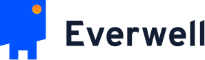
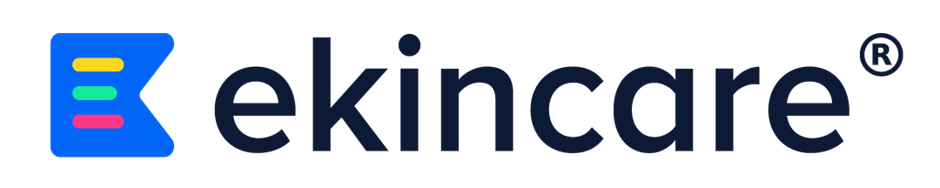
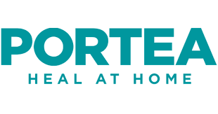

Hi, I'm Paridhi Mehra.
I build products.
Founder, HappiNest · Bengaluru
For ten years I have been building products across every stage a company can be in: seed-stage startups, growth companies, government platforms at the scale of millions, and now my own bootstrapped organisation.



What I've Built
(ten years, four companies, sixteen countries)
Everwell Health Solutions
Senior PM to Principal PM · Bengaluru · 2020–2024
2.6M+Patients on Nikshay
16+Countries on Everwell Hub
5PMs & designers led and mentored
Owned two of Everwell's biggest bets in parallel: Nikshay, India's national TB platform serving 2.6 million patients, and the SaaS platform behind its international deployments across 16 countries.
The real lesson was about the people on the other side of the screen. Frontline health workers are overworked and stretched thin, and software built for them usually just duplicates their work. I learned to treat tech as an enabler, not the answer. I came from a world that optimised for the best mobile devices. At Everwell my users were often on feature phones, sitting in the remotest parts of the world where the infrastructure was often worse than what we could plan for.
Future World Studios
VP of Product Management · California · 2019–2020
Immersive VR in healthcare
Physician training
India operations
Yes, I have done VR too. This was 2019, before Meta, and there was no playbook. Half my job was figuring out what we were even building.
The other half was running the India back office. Payments, salaries, insurance, day-to-day operations. It was the closest I had come to running a company before HappiNest.
eKincare
Product Manager · Hyderabad · 2017–2019
Progressive web app
Telemedicine
Recommendation engine
Employee health, sold to HR. A tricky problem to solve... because who wants to disclose their ailments to their HR?
That question shaped everything I shipped here. The work was less about features and more about earning enough trust that people would actually engage.
Portea Medical
Assistant Product Manager · Bengaluru · 2016–2017
+185%Revenue in a year
2New product lines launched
PricingModel and matrix
This was 2016. Apps weren't yet a default in Indian homes. Tech was a small enabler at best. The real product was the service.
So this is where I learned the business of building. Pricing, unit economics, customer engagement, partnerships, GTM, what a VC-backed business actually needs to do to grow. Two new nursing divisions launched, revenue up 185% in a year, and a foundation that made every later move possible.